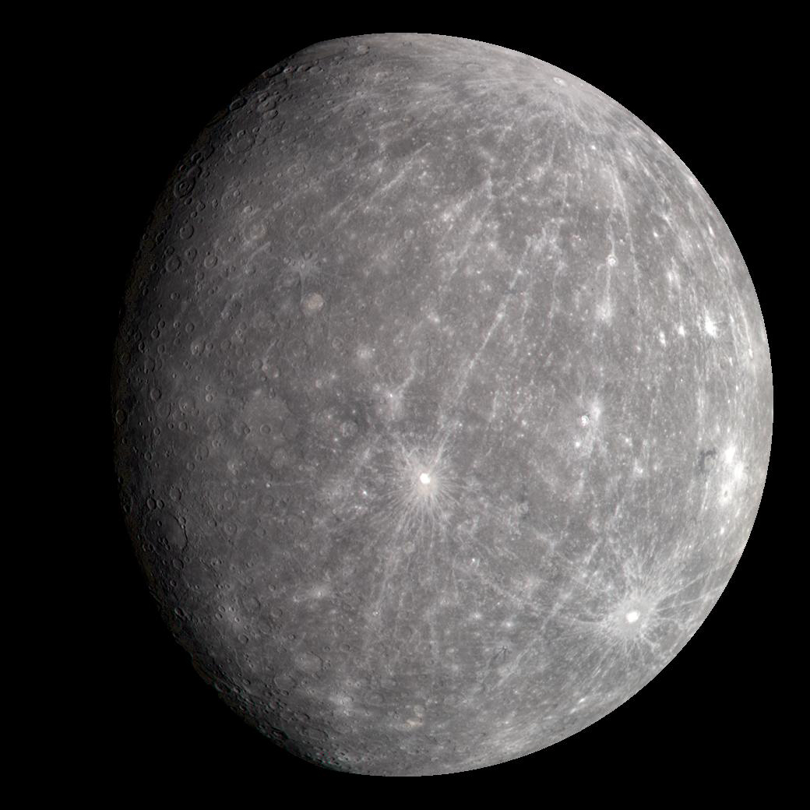

<!-- HansM oppgaver:
Planetene
Foto
Tekst
Link til Fotosource -->

<!-- Class struktur:
planet-card: For hver planets kort.
planet-name: Navn på planeten.
planet-position: Planeten sin posisjon i solsystemet.
planet-facts: Grunnleggende fakta.
planet-visuals: Visuelle elementer (bilder, grafikk).
planet-unique: Unike egenskaper.
planet-history: Historiske og vitenskapelige fakta.
planet-interactive: Interaktive elementer som quiz eller simulering.
planet-comparison: Sammenligningsdata.
planet-facts: Fun facts og trivia. -->

<!DOCTYPE html>
<html lang="en">
  <head>
    <meta charset="UTF-8" />
    <meta name="viewport" content="width=device-width, initial-scale=1.0" />
    <title>Document</title>
  </head>
  <body></body>
</html>

<div id="planets-overview">
  <!-- Mulig class struktur -->
  <div class="planet-card" id="mercury">
    <h2 class="planet-name">Mercury</h2>
    <p class="planet-position">Position: 1st planet from the Sun</p>
    <div class="planet-facts">
      <p id="diameter">Diameter: 4,879 km</p>
      <p id="mass">Mass: 3.30 x 10^23 kg</p>
      <p id="gravity">Gravity: 3.7 m/s²</p>
      <p id="distance">Distance from Sun: 57.9 million km</p>
      <p id="rotation">Rotation Time: 59 Earth days</p>
      <p id="orbit">Orbit Time: 88 Earth days</p>
    </div>
    <div class="planet-visuals">
      
      <p>Size comparison and distance visuals</p>
    </div>
    <div class="planet-unique">
      <p id="atmosphere">Atmosphere: Thin, mainly oxygen, sodium, hydrogen</p>
      <p id="temperature">Temperature: -173 to 427°C</p>
      <p id="moons">Moons: None</p>
      <p id="special feature">
        Special Features: Heavily cratered surface, large iron core
      </p>
    </div>
    <div class="planet-history">
      <p id="discovery">Discovery: Known since ancient times</p>
      <p id="spacemissions">Space Missions: Mariner 10, MESSENGER</p>
    </div>
    <div class="planet-interactive">
      <a href="quiz.html">Take the Mercury Quiz</a>
      <p>Interactive orbit simulation</p>
    </div>
    <div class="planet-comparison">
      <p id="comparisons">Comparisons: Smallest planet, closest to the Sun</p>
    </div>
    <div class="planet-facts">
      <p id="trivia">Trivia: Mercury's day is longer than its year!</p>
    </div>
  </div>
</div>
